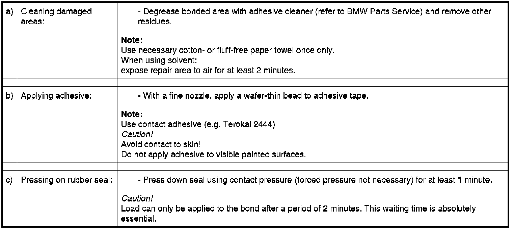
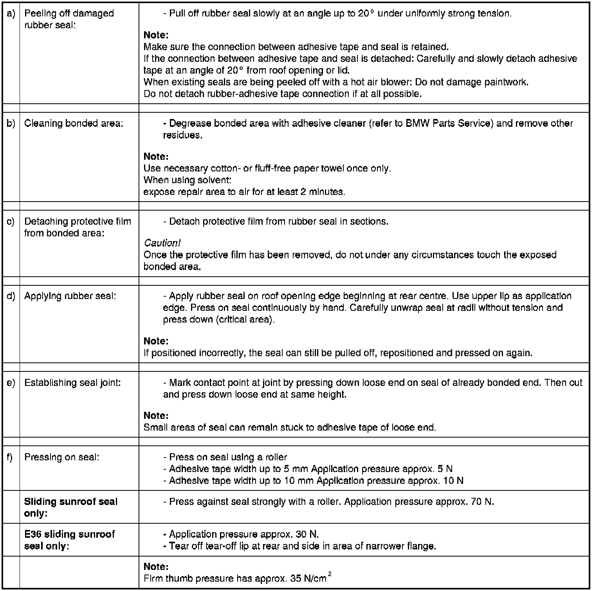

54 0 ... Repair Instructions For Bonded Seals
54 0 ... - Repair instructions for bonded seals
1. - General information on handling rubber seal profiles:
- If seals reveal partly detached protective film on delivery, they must not be bonded.
- Store seals at 15° C to 25° C.
- If, during the handling, the protective film has come off before bonding, it can still be bonded.
- Bonding at room and object temperature > 20° C. Temperatures between 40 and 50° C significantly increase initial adhesion.
- Seals, which are subjected to temperatures above 80° C after gluing, will be very difficult to remove.
2. - Damage pattern and repair
2.1 - Partially detached bond (rubber-adhesive tape or adhesive tape-paint)
- Up to 120 mm for retouching without auxiliary resources
- Up to 200 mm repaired with pressing-on tools on straight surfaces

2.2 - Larger defects (mechanical damage and larger separations of seal)
- Complete replacement of rubber seal necessary

3. - Checking rubber seal
- Check the bonded seals for correct positioning and perfect adhesion. The bonding can be checked by pressing back the sealing lip.
- The force required to peel off the seal immediately after gluing must be greater than 10 N/cm.